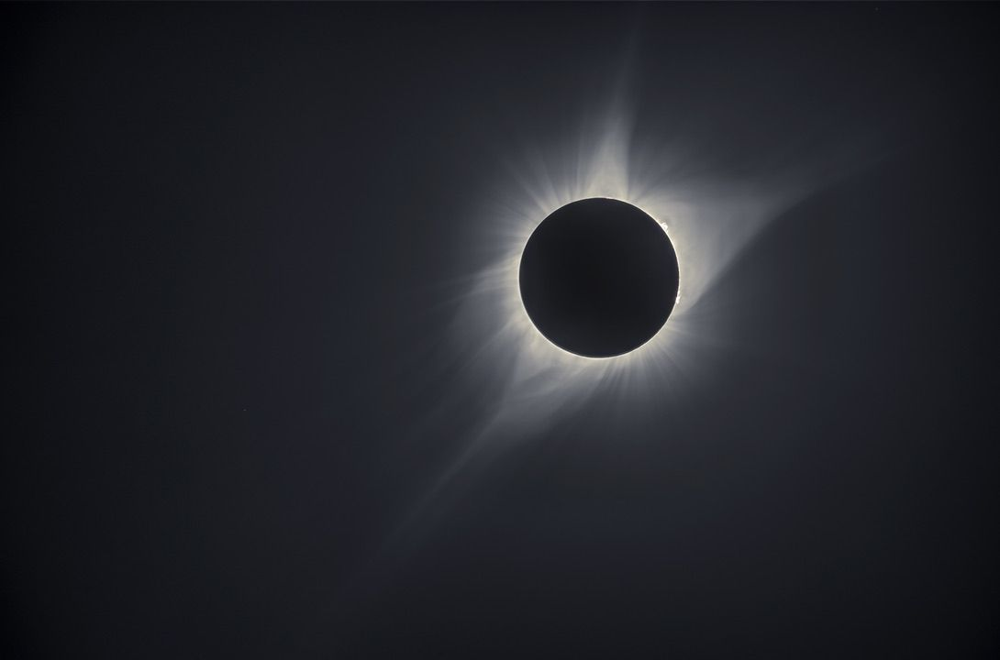

Case file 03 · Explain
Eclipse Across America
NASA, Aug. 21, 2017. A few minutes of totality, a national audience watching live, and no second take.
The challenge
A total solar eclipse is the rare science story the whole country watches at the same moment. NASA's job was to turn a few minutes of totality into something people could follow, understand and feel, live on NASA TV from coast to coast, and then keep telling the story afterward.
My role
I was a Digital Imaging Specialist at NASA Glenn Research Center. I helped plan and carry out the visual coverage for NASA's Eclipse Across America effort, and photographed totality from Jefferson City, Missouri.
How a moment like this gets explained
Plan the coverage around what the public needs to see
Get the one frame that carries the science
Check the image and the caption before anything is published
Keep explaining after the live event ends
Outcome
The photograph ran on NASA.gov as Image of the Day, "A Celestial Diamond Ring: Nature's Gift to Humanity." NASA recognized the people behind its public and education engagement for the live coast-to-coast broadcast with a 2018 Honor Award for Group Achievement.
What it means for explaining AI
A university's AI work is harder to show than an eclipse, but the job is the same: decide what the public needs to understand, find the image or example that makes it concrete, and check every caption before it goes out. The eclipse taught me to plan for the one moment that matters and to keep telling the story after it passes.
